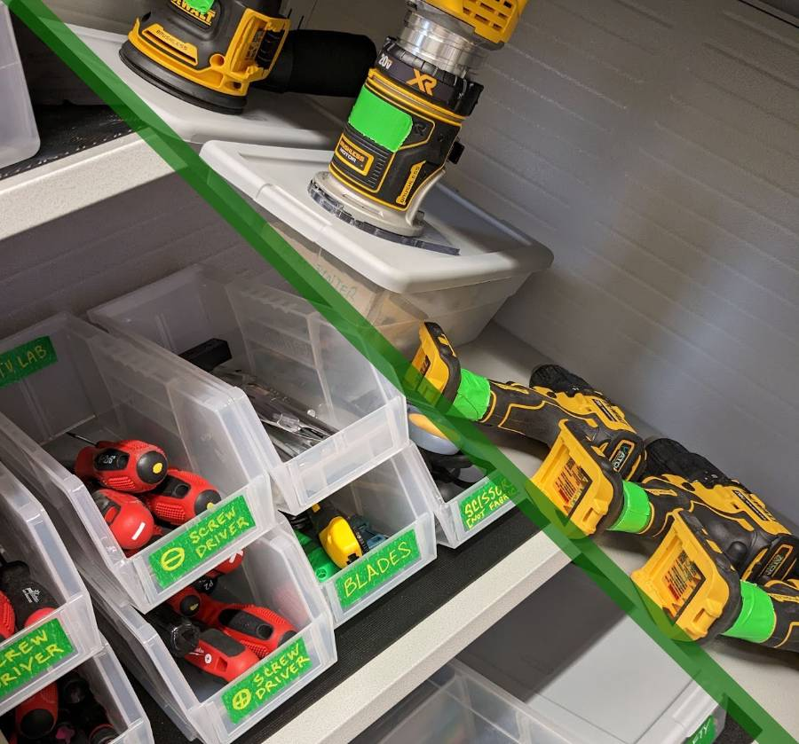

Tools
The Tools and the Talent...

General tools, equipment, and materials are labeled green.
Power tools, mostly used in the Wood Shop, are more like... GREEEEEN!
General Equipment
Items marked with * are materials or supplies that get used up.
- Knives (yes!)
- Cutting mats
- Scissors (not for fabric)
- Measuring tools
- Various glues*
- Various screwdrivers
- Zip ties*
- Plywoods* (laser safe)
- Hot glue guns*
- Various tapes*
- Dremel tools
- Drills / drivers
- Various papers
- 2D craft supplies
- 3D craft supplies
- Plastics* (laser safe)
- Various fasteners
- Sandpaper*
- Sanding tools
- Saws
- Files
- Chisels
- Various fabrics
- ...and MORE!
Specialized Areas
Each area has its own equipment, orientations, and rules.
- Wood Shop (pink) and CNC (blue)
- Sewing & Textiles (yellow)
- Electronics
- Lasers (red)
- 3D Printers (purple)
Materials
The BTU Lab is not a free supply store. But there are many ways to barter, including displaying your work in BTU, tagging us on social media, offering workshops, volunteering to organize supplies, and more.
If you need something, we ask that you give something in return.